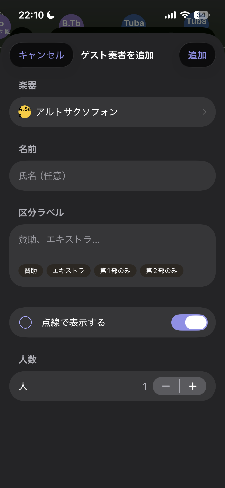
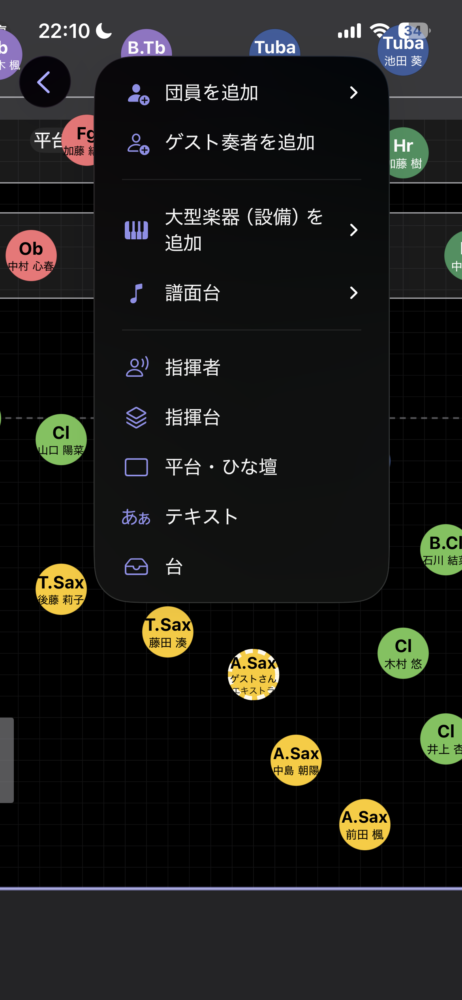
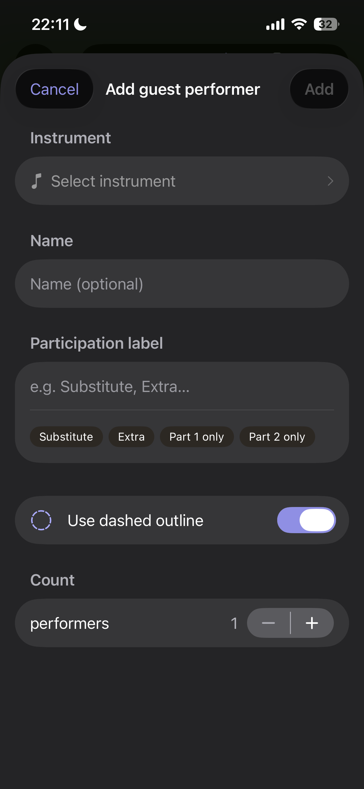
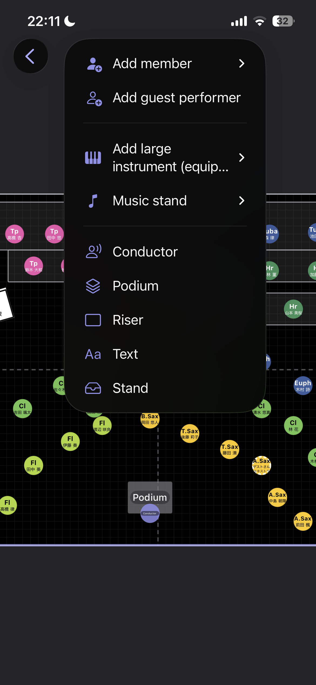

使い方・サポート Support & User Guide
団員登録から配置図の出力までの流れを説明します。右上のボタンで英語／日本語を切り替えられます。 This guide walks through the app from roster to exported seating chart. Use the buttons at the top right to switch between English and 日本語.
5 つの手順（全体の流れ）The five steps
- 団員を登録する（手入力または CSV）。
- 演奏会を作り、舞台（配置図）を用意する。
- パートを選んで自動配置する。
- ドラッグ・整列で位置を調整する。
- PDF・画像として出力・共有する。
- Register your members (by hand or from CSV).
- Create a performance and add a stage layout.
- Select a section and auto-place it.
- Fine-tune positions by dragging and aligning.
- Export and share as PDF or an image.
1. 団体と団員名簿1. Organizations & roster
最初に団体（学校・楽団）を作ります。団体の追加は 設定 → 団体 から行えます。団体を作ると、名簿と演奏会が使えるようになります。
団員を追加する
名簿画面右上の「＋」で 1 人ずつ追加できます。氏名・ふりがな・学年・主担当楽器・持ち替え楽器・在籍状態・備考を登録できます。
パートは主担当楽器から自動で決まります。たとえば「トランペット」を選べば金管に、「クラリネット」を選べば木管に分類されます。パートを手で指定する必要はありません。
並べ替え・グループ表示・検索
- 系統別（木管・金管・打楽器…）／学年別にまとめて表示できます。
- 席順・ふりがな・氏名・学年で並べ替えられます（設定は端末に記憶されます）。
- 検索フィールドで氏名・ふりがなを絞り込めます。キーボードはフィールド右の「完了」で閉じられます。
- 行内でパート色のアバター・学年・在籍を素早く変更できます。


Start by creating an organization (a school or ensemble) from Settings → Organizations. Once it exists, the roster and performances become available.
Adding members
Use the "+" at the top of the roster to add members one by one: name, phonetic reading, school year, primary instrument, doubling instruments, active status and notes.
The part (section) is derived automatically from the primary instrument — pick "Trumpet" and the member is filed under Brass, pick "Clarinet" and under Woodwinds. You never set the part by hand.
Sorting, grouping & search
- Group by family (woodwind, brass, percussion…) or by school year.
- Sort by chair order, phonetic reading, name or year (remembered on the device).
- Filter by name in the search field; dismiss the keyboard with the "Done" button above it.
- Change the instrument avatar, year and active status inline in each row.

2. CSV で名簿を取り込む2. Importing a roster from CSV
名簿をまとめて登録したいときは CSV が便利です。名簿画面の「…」→「CSV を読み込む」、または団員がいないときの案内から取り込めます。ひな型は下のボタンから入手できます。
列の構成
次の列を用意します。「パート」の列は不要です（主担当楽器から自動で判定します）。列の順番は自由で、取り込み時に各列の意味を割り当てられます。
| 列 | 必須 | 内容 |
|---|---|---|
| 氏名 | 必須 | 例：佐藤 陽向 |
| ふりがな | 任意 | 並べ替え・検索に使用 |
| 学年 | 任意 | 半角数字（例：1・2・3） |
| 主担当楽器 | 推奨 | 例：クラリネット。ここからパートが決まります |
| 持ち替え楽器 | 任意 | 複数ある場合は「・」や「/」で区切る |
| 備考 | 任意 | 自由記入 |
楽器名について
楽器名は日本語の標準名（フルート、クラリネット、トランペット など）で書くのが確実です。Cl や Trumpet のような略称・英名も可能な範囲で自動変換しますが、取り込み前の確認画面で「原文 → 変換候補」を必ず確認できます。標準楽器に一致しなかった場合も原文は備考へ残ります。
ファイルの作り方（Excel / Numbers / Google スプレッドシート）
- 上のひな型をダウンロードして開きます。
- 1 行目の見出しはそのままに、2 行目以降へ団員を入力します。
- そのまま 「CSV（コンマ区切り）」 形式で保存します。区切りはコンマ（,）です。
- アプリで「CSV を読み込む」→ ファイルを選択 → 列の割り当て → 内容を確認 → 取り込み、の順に進めます。
ひな型の中身（先頭の数行）
氏名,ふりがな,学年,主担当楽器,持ち替え楽器,備考 佐藤 陽向,さとう ひなた,3,フルート,ピッコロ,パートリーダー 鈴木 葵,すずき あおい,3,クラリネット,, 高橋 蓮,たかはし れん,2,オーボエ,イングリッシュホルン,

CSV is the fastest way to register many members. Open it from the roster's "…" menu → "Import CSV", or from the empty-roster prompt. Download the template below.
Download the roster template CSV
Columns
Prepare the following columns. You do not need a "part" column — the part is inferred from the primary instrument. Column order is free; you map each column during import.
| Column | Required | Notes |
|---|---|---|
| Name | Required | e.g. Hinata Sato |
| Phonetic | Optional | Used for sorting / search |
| School year | Optional | A number (1, 2, 3…) |
| Primary instrument | Recommended | e.g. Clarinet — this sets the part |
| Doubling instruments | Optional | Separate multiples with "·" or "/" |
| Notes | Optional | Free text |
Instrument names
Standard names are the most reliable. Common abbreviations and English names (e.g. Cl, Trumpet) are normalized where possible, and the confirmation screen always shows "original → suggested" so nothing is changed silently. Unrecognized text is preserved in the member's notes.
Preparing the file (Excel / Numbers / Google Sheets)
- Download and open the template above.
- Keep the header row; enter members from the second row onward.
- Save as CSV (Comma delimited). The separator is a comma.
- In the app: Import CSV → pick the file → map columns → review → import.
Template contents (first rows)
Name,Phonetic,Year,Primary,Doubling,Notes Hinata Sato,,3,Flute,Piccolo,Section leader Aoi Suzuki,,3,Clarinet,, Ren Takahashi,,2,Oboe,English Horn,
3. 演奏会と配置図3. Performances & layouts
演奏会を作成し、日付・会場・曲名を登録します。1 つの演奏会に複数の配置図（曲や場面で変わるもの）を持てます。
- 「配置図を追加」で名称と舞台（会場プリセット）を選んで作成します。追加した配置図はその場で一覧に表示されます。
- 舞台の間口・奥行きはカードの ＋／− で調整できます。
- 各配置図には曲名を演奏順で登録でき、版数（v1, v2…）も持てます。

Create a performance and set its date, venue and pieces. A single performance can hold several layouts (for different pieces or scene changes).
- "Add layout" lets you name it and pick a stage (venue preset). New layouts appear in the list immediately.
- Adjust stage width and depth with the +/− controls on the card.
- Each layout keeps its pieces in performance order and a version number (v1, v2…).

4. 舞台の編集4. Editing the stage
置く・選ぶ・動かす
- 「追加」から団員（人＋担当楽器）を舞台へ置きます。ピアノ・マリンバなどの大型楽器は設備としても単体で置けます。
- すでに配置済みの団員は追加候補から自動的に除外され、重複しません。
- オブジェクトは押した瞬間に選択され、そのままドラッグで移動します。指の位置に追従します。
- 2 本指でキャンバスを移動、ピンチで拡大・縮小、空白のダブルタップで全体表示に戻ります。
自動配置
パート（と、その中の特定メンバー）を選び、直線／円弧・列数・人数・間隔・向きを指定して一括配置します。確定前にプレビューで確認できます。
整える
- 回転ハンドルで自由角度に回せます（設置型オブジェクトはインスペクタの 90° 回転も可）。
- 複数選択して整列・等間隔配置ができます。
- グリッド・中央線・近接オブジェクトへスナップします。舞台の縦横中央には十字のガイド線が出ます。
- 譜面台は長押しでその場コピーできます（同じ譜面台を素早く増やせます）。
- 取り消し（Undo）・やり直し（Redo）に対応します。

警告（助言）
舞台外のオブジェクト、大きすぎる重なり、団員未割当の席、同じ団員の重複割当を助言として表示します。安全を保証するものではありません。
Place, select, move
- Use "Add" to place members (person + instrument). Large instruments such as piano or marimba can also be placed on their own as equipment.
- Members already on stage are excluded from the add list, so nobody is placed twice.
- An object is selected the moment you touch it and moves with your finger as you drag.
- Pan with two fingers, pinch to zoom, double-tap empty space to fit the whole stage.
Auto-placement
Choose a section (and specific members within it), then set line/arc, number of rows, count, spacing and facing to place everyone at once. A preview is shown before you commit.
Tidying up
- Rotate freely with the rotation handle (structural objects also offer a 90° rotate in the inspector).
- Select multiple objects to align and distribute them evenly.
- Snap to the grid, the center lines and nearby objects. A cross guide marks the stage center (both axes).
- Long-press a music stand to duplicate it in place — a quick way to add more of the same stand.
- Undo and redo are supported.

Warnings (advisory)
The app flags objects off the stage, excessive overlaps, seats without an assigned member, and the same member assigned twice. These are advisory only and are not a safety guarantee.
5. 名簿にない奏者を配置する（ゲスト奏者）5. Placing performers not in the roster (guest performers)
ゲスト奏者機能を使うと、名簿に登録していない奏者を配置図へ置けます。正式な団員と視覚的に区別しながら、同じ配置図で一緒に管理できます。
こんなときに使います
- 賛助・助奏の方：他団体から一時的に参加する奏者。
- 一部の曲だけ参加する奏者：「第1部のみ出演」「第2部から合流」など。
- エキストラ：コンクールや演奏会で招く外部奏者。
- まだ名簿に登録していない入団予定の方。
ゲスト奏者を追加する
- 舞台編集画面で「追加 → ゲスト奏者を追加」をタップします。
- 楽器を選びます（必須）。
- 氏名を入力します（任意。配置図上の表示に使います）。
- 区分ラベルを選ぶかカスタム入力します（任意）。
- 点線表示のオン／オフを選びます（既定はオン）。
- 人数を指定して「追加」をタップします。

区分ラベル
「賛助」「エキストラ」「第1部のみ」「第2部のみ」のプリセットをワンタップで選べます。自由入力も可能です。ラベルは奏者の丸に表示されるため、配置図を共有したときに役割がすぐ伝わります。
点線表示
ゲスト奏者は既定で点線の丸で表示されます。団員（実線）と一目で区別できるため、ステージ担当者が配置図を見たときに状況を把握しやすくなります。
- 奏者を選んでインスペクタを開くと、点線／実線をいつでも切り替えられます。
- 複数選択して一括変更することもできます。
- PDF・画像への出力にも反映されます。点線の奏者がいるときは出力の凡例に「--- ゲスト・賛助等」が自動で追加されます。

後から名簿に登録する
ゲスト奏者が正式に入団した場合は、キャンバス上でその奏者を選んでインスペクタの「名簿に登録」をタップします。氏名・学年・パートを入力すると、配置図の割り当てを保ったまま名簿へ追加されます。この操作は取り消し（Undo）できます。
The guest performer feature lets you place performers who are not in your roster on the stage layout — keeping them visually distinct from registered members while managing everything in the same chart.
When to use it
- Guest or assistant musicians joining temporarily from another ensemble.
- Players who appear in only some pieces — "Part 1 only," "joining from Part 2," etc.
- Extras — professional or student players invited for a concert or contest.
- Prospective new members who have not been registered yet.
Adding a guest performer
- In the stage editor, tap Add → Add guest performer.
- Select the instrument (required).
- Optionally enter a display name shown on the chart.
- Optionally pick or type a participation label.
- Choose whether to show a dashed outline (on by default).
- Set the count and tap Add.

Participation labels
Quick-select preset labels — "Guest," "Extra," "Part 1 only," "Part 2 only" — or type any custom text. The label appears inside the performer's circle so anyone reading the chart immediately understands the role.
Dashed outline
Guest performers are shown with a dashed circle by default, making them visually distinct from roster members (solid circles) at a glance. This is especially helpful for stage managers reviewing the layout.
- Select any performer and open the inspector to toggle between dashed and solid at any time.
- Multi-select and apply the change to several performers at once.
- The style carries through to PDF and image exports. When dashed performers are present, a "--- Guest / assistant" legend entry is added automatically.

Registering as a roster member later
If a guest performer officially joins the ensemble, select them on the canvas, open the inspector, and tap "Register in roster." Fill in the name, year and instrument and they are added to the roster while keeping their stage assignment intact. The operation can be undone.
6. 出力・共有6. Export & sharing
- 出力は画面のスクリーンショットではなく、モデル座標から生成します。選択枠やガイドは含まれません。
- PDF・PNG・JPEG に対応し、A4 横が既定です。用紙サイズを選べます。
- 氏名を表示する出力／しない出力を選べます（ホール提出などで個人名を出したくない場合に）。
- iOS 標準の共有シートから印刷・保存・共有できます。
- Exports are generated from model coordinates, not a screenshot — selection frames and guides are never included.
- PDF, PNG and JPEG are supported; A4 landscape is the default, and you can choose the page size.
- Choose with-names or without-names output (useful when you must not show personal names).
- Print, save or share through the standard iOS share sheet.
7. 設定7. Settings
- 楽器の管理：標準に無い楽器を追加でき、色・略称・椅子/譜面台の要否を編集できます。
- デモ用の団体を表示：お試し用の吹奏楽団を表示／非表示にできます（自分で作った団体には影響しません）。
- 団員配置時に譜面台も置く：奏者を置くときに譜面台（×型）も一緒に置くかを切り替えます。
- iCloud 同期：同期の状況（この端末に保存済み／同期済みなど）を表示します。詳しくは「8. 端末間の同期」をご覧ください。
- ヘルプ：このサポートページとプライバシーポリシーを開けます。
- Manage instruments: add instruments not in the catalog and edit color, abbreviation and chair/stand requirements.
- Show demo data: show or hide a demo band (your own organizations are untouched).
- Add a stand with each performer: whether an "×" music stand is placed together with a seated player.
- iCloud sync: shows the sync status (saved on this device / synced, etc.). See "8. Sync across devices" for details.
- Help: opens this support page and the privacy policy.
8. 端末間の同期（iCloud）8. Sync across devices (iCloud)
同じ Apple account でサインインした iPhone と iPad の間で、団体・名簿・演奏会・配置図が自動で同期します。iPad で作った配置図を iPhone で確認したり、片方で直した内容をもう片方へ反映したりできます。
- 特別な設定は不要です。端末が iCloud にサインインしていれば自動で有効になります。
- オフラインでも編集でき、通信が回復すると自動で同期します。
- 配置図の追加・移動、会場名・本番日・備考などの変更が、もう片方の端末へ反映されます。
- 同期状況は設定画面の iCloud セクションで確認できます。
- データはあなた自身のプライベートな iCloud に保存されます。当社のサーバーや第三者へ送信することはありません。
Your organizations, roster, performances and stage layouts sync automatically between an iPhone and iPad signed in to the same Apple Account. Build a layout on the iPad and review it on the iPhone, or make a change on one device and see it on the other.
- No special setup — it turns on automatically as long as the device is signed in to iCloud.
- You can keep editing offline; changes sync automatically once you're back online.
- Adding or moving objects, and changes to venue name, event date and notes, appear on the other device.
- Check the sync status in the iCloud section of Settings.
- Data is stored in your own private iCloud. It is never sent to our servers or any third party.
よくある質問FAQ
追加した配置図が演奏会に出てきません。
最新版では追加直後に一覧へ表示されます。表示されない場合はアプリを最新へ更新してください。
CSV にパート列は要りますか？
不要です。主担当楽器からパートを自動判定します。
個人名を出さずに配置図を配れますか？
できます。出力時に「氏名を表示しない」を選んでください。
ゲスト奏者と団員の違いは何ですか？
団員は名簿に登録された正式なメンバーです。ゲスト奏者は名簿に登録せずに配置図だけへ一時的に置ける奏者です。後から名簿に登録することもできます。
データはどこに保存されますか？
端末内に保存され、同じ Apple account で iCloud にサインインしていれば、あなた自身のプライベートな iCloud を通じて自分の iPhone・iPad と自動で同期します。当社のサーバーや第三者へ送信することはありません。詳しくはプライバシーポリシーをご覧ください。
片方の端末の変更が、もう片方に出てきません。
両方の端末でアプリを最新版に更新し、同じ Apple account で iCloud にサインインしているか確認してください。オフライン時の変更は通信が回復してから同期されます。反映されないときは少し待つか、アプリを開き直してください。詳しくは「8. 端末間の同期」をご覧ください。
Android版・パソコン版はありますか？
現在は iPhone・iPad 版のみです。希望される方の人数を見て作るかどうかを決めます。こちらから登録をお願いします → Android版・Web版を希望する
A layout I added doesn't show up in the performance.
In the current version it appears immediately after you add it. If it doesn't, please update to the latest version.
Does the CSV need a "part" column?
No. The part is inferred from the primary instrument.
Can I share a chart without personal names?
Yes — choose "without names" when exporting.
What is the difference between a guest performer and a roster member?
Roster members are officially registered in your organization. Guest performers are placed directly on the layout without registration — useful for temporary additions. You can always register a guest as a roster member later.
Where is my data stored?
On your device, and — when you're signed in to iCloud with the same Apple Account — synced automatically across your own iPhone and iPad through your private iCloud. It is never sent to our servers or any third party. See the privacy policy for details.
A change on one device doesn't appear on the other.
Update the app to the latest version on both devices and make sure they're signed in to iCloud with the same Apple Account. Changes made offline sync once you're back online. If something doesn't show up, wait a moment or reopen the app. See "8. Sync across devices" for details.
Is there an Android or desktop version?
Currently iPhone and iPad only. Whether we build one depends on how much interest we see — please sign up here → Request the Android/Web version
お問い合わせContact
ご意見・ご要望・不具合の報告を、このフォームから直接お送りいただけます（アプリ内の「設定 → ご意見・ご要望」と同じ仕組みです）。 Send your feedback, requests or bug reports directly from this form — the same mechanism as “Settings → Feedback” inside the app.
うまく送信できないときは support@margheritaworks.com までメールでお寄せください。 If sending fails, email support@margheritaworks.com.